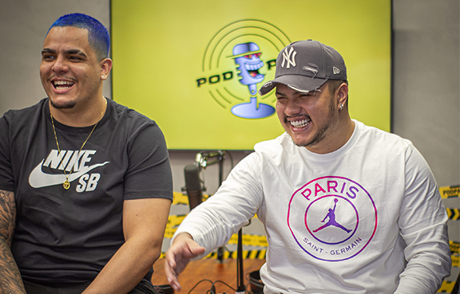
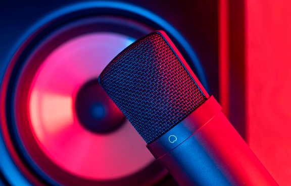
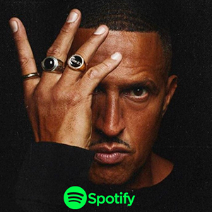
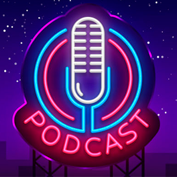

AS PRINCIPAIS NOTÍCIAS ENVOLVENDO PODCASTS
Mornark é "demitido" do Flow após citar partidos NAZISTAS! Entenda:

PODPAH se torma o maior podcast do Brasil! Entenda:

Brasil é o 3º país que mais consome podcasts no mundo! Entenda:
Confira: Monark cria novo podcast em plataforma concorrente do YouTube, e já ultrpassa PodPah!
Lula participa do Podpah, e Igão e mítico viram motivo de discussão nas redes sociais!
O Primo Rico cria podcast no Spotify e já se torma um dos maisres Podcasts da plataforma!

Você sabia que o Mano Brown possui um dos podcasts mais ouvidos do spotify? Não! Então confica agora:

Confira a lista dos maiores podcasts do Brasil, e quais são seus respectivos donos e objetivos!